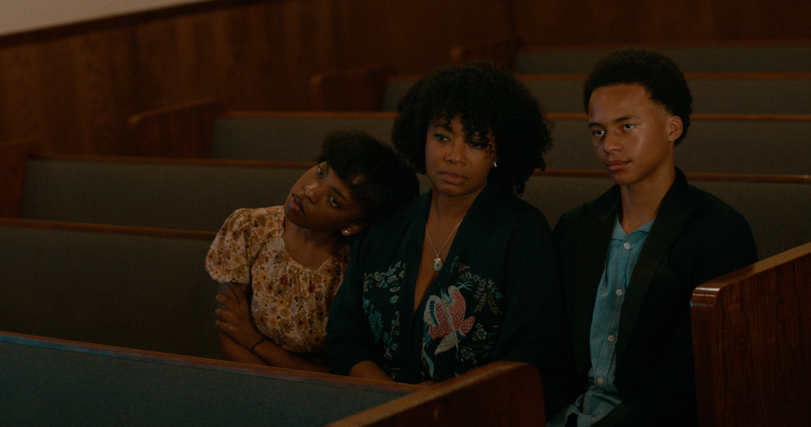

A Film By Luke Harris
Lily, a Black mother from the South and a pillar in her Christian community, is raising her two children, 16-year-old Sophia and 14-year-old William, three years after the loss of her husband. This Christmas marks their first visit to Grandma's house to reconnect with family since his passing.
However, just before the trip, Lily uncovers a troubling secret about her children. As they head to Grandma's, Lily must navigate how to handle the revelation and confront the truth, all while striving to keep the religious and family bonds intact.
Religion is the framework of My Kids, shaping the family's identity and their community's moral framework. The taboo acts committed by the children disrupt the delicate balance between faith and reality, challenging the traditional definitions of good and evil. The film delves into the fragility of faith when tested by the unthinkable, exposing the tension between outward sanctity and the hidden darkness that lies within.

"How far would you go for your kids? Is love truly unconditional, or does it have a limit? These questions inspired My Kids. I began imagining what it would feel like to learn the worst possible secret about your children and be forced to grapple with that truth during the happiest time of the year: Christmas.
My Kids is a dark psychological horror-thriller centered on Lily, a devout Black Christian mother whose faith guides every aspect of her life. Beneath her devotion, however, lie secrets of her own. When Lily discovers that her children are committing what she believes to be an unholy sin, her world begins to unravel. As she struggles to reconcile her love for her children with her deeply held beliefs, she is forced to confront her own sins and hypocrisies.
At its core, My Kids is a story about faith, family, and the terrifying complexity of love. In the end, Lily must answer a question that haunts every parent: How far are you willing to go for your children even if it means going to Hell?"
Luke Harris is a Director/Writer from USC School of Cinematic Arts where he also served as the President of African American Cinema Society founded by John Singleton. His accolades include winning the 2022 #CreateLouisiana French Cultural Film Grant for his film "Tambou" and being named a Finalist for HBO's 2025 Short Film Award.
Join us in bringing this uncompromising vision to the screen.